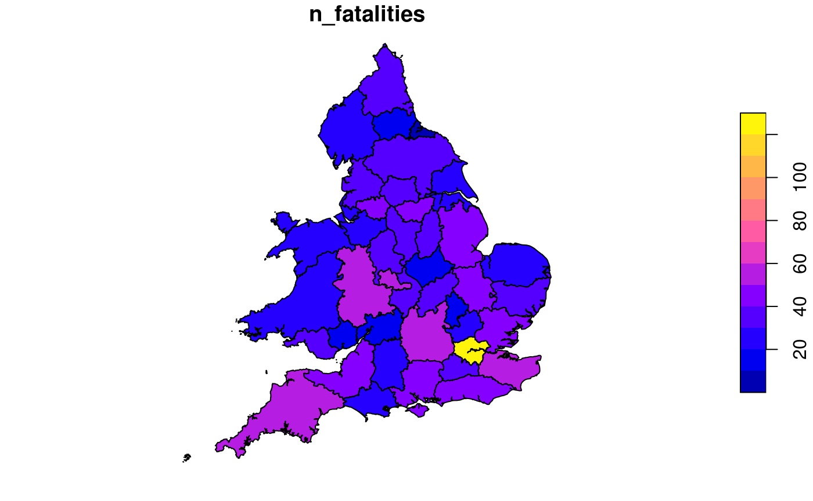

vignettes/blog.Rmd
blog.Rmdstats19 is a new R package that enables access to and processing of Great Britain’s official road traffic casualty database, STATS19.
We started the package in late 2018 following three main motivations:
stplanr being split-out into 2 separate packages already: cyclestreets and stats19.We have a wider motivation: we want the roads to be safer. By making data on the nature of road crashes in the UK more publicly accessible (in a usable format), we hope this package saves lives.
It has been peer reviewed thanks to rOpenSci and is now published in the Journal of Open Source Software (JOSS) (Lovelace et al. 2019). For installation and the code, see its home in rOpenSci: https://github.com/ropensci/stats19, and the package documentation at https://itsleeds.github.io/stats19/.
In this post, we’ll provide a bit of context, show how the package works, and provide ideads for future work building on the experience. Now is a good time to report on the package: version 0.2.0 has just been release on CRAN, which contains a few improvements, some of which are used in this blog post (ask = FALSE in get_stats19(), for example, which makes it even quicker to get data with this package).
The main authors are based at the Institute for Transport Studies (ITS) and the Leeds Institute for Data Analytics (LIDA), institutions focussed on transport and data-intensive research. We have prior experience writing code to work with road crash data: Robin wrote code for an academic paper on cycle safety in Yorkshire based on STATS19 data (Lovelace, Roberts, and Kellar 2016), and put it in the robinlovelace/bikeR repo for posterity/reproducibility. Package contributor, Dr Malcolm Morgan, wrote code processing different STATS19 data for the Cycling Infrastructure Prioritisation Toolkit (CyIPT) and put it in cyipt/stats19.
The large and complex STATS19 data from the UK’s Department for Transport, which is open access but difficult-to-use, represented a perfect opportunity for us to get stuck into a chunky data processing challenge.
One of the reviewer comments from the rOpenSci review process (which has 77 comments - lots of knowledge shared) alluded to the package’s esoteric name:
I confess I wish the package name was more expressive–stats19 sounds like an introductory statistics class.
We agree! However, the priority with the package is to remain faithful to the data, and alternative name options, such as stats19data, roadcrashesUK and roadSafetyData were not popular. Furthermore, the term ‘stats19’ is strongly associated with road crash data online. The URL https://en.wikipedia.org/wiki/STATS19 resolves to https://en.wikipedia.org/wiki/Reported_Road_Casualties_Great_Britain, for example (this page is provides and excellent introduction to STATS19).
The name comes from a UK police form called STATS19 (note the capital letters). There is another document called STATS20, which is the guidance to STATS19 officers filling in STATS19 form.
An important point is that the dataset omits crashes in which nobody was hurt, as emphasised by another government document:
The STATS19 data are therefore not a complete record of all injury accidents and this should be borne in mind when using and analysing the data. However, they remain the most detailed, complete and reliable single source of information on road casualties covering the whole of Great Britain, in particular for monitoring trends over time
The Department for Transport (DfT) also names the dataset STATS19 on the main web page that links to open access road crash data.
The importance of road safety and informed decision making based on crash data cannot be overstated. Deliberately avoiding the matter of life and death of road safety, two numbers from a strategy document by the UK government (2011) are worth mentioning to show the scale of the numbers:
The economic welfare costs [of road collisions] are estimated at around £16 billion a year while insurance payouts for motoring claims alone are now over £12 billion a year.
Even more shocking are the global statistics, as summarised by an open access and reproducible academic paper that uses data from the package to explore car-pedestrian crashes:
While so many people die on the roads each year in the UK (1,793 people in 2017, 3 deaths per 100,000) and worldwide (1,250,000 people in 2015, 17 deaths per 100,000) and ‘vision zero’ remains a Swedish dream (Johansson 2009), we urge people researching STATS19 and other road safety datasets to focus on a more urgent question: how to stop this carnage?
There are three main different types of CSV files released by the DfT: accidents, vehicles and casualties tables. There is a schema covering these tables but a good amount of work is needed to understand it, let alone be able to the data contained within the files and convert the integers they contain into meaningful data.
The annual statistics have not been released in a consistent way either, making it hard for people to download, or even find, the relevant files. For example, there are separate files for each of the above tables for certain years (e.g. 2016, 2017) but not for all of 1979 - 2017 or 2018 now. The largest chunk is the 1979 - 2004 data, which is made available in a huge ZIP file (link). Unzipped this contains the following 3 files, which occupy almost 2 GB on your hard drive:
With those introductions out of the way, lets see what the package can do and how it can empower people (including target audiences of academics, policy makers and road safety campaigners and R programmers/analysts wanting to test their skills on a large spatio-temporal dataset) to access STATS19 data, back to 1979. First install the package in the usual way:
# release version - currently 0.2.0
install.packages("stats19")
# dev version
# remotes::install_github("ropensci/stats19") Attach the package as follows:
## Data provided under OGL v3.0. Cite the source and link to:
## www.nationalarchives.gov.uk/doc/open-government-licence/version/3/The easiest way to get STATS19 data is with get_stats19(). This function takes 2 main arguments, year and type. The year can be any year between 1979 and 2017.
## [1] 129982What just happened? We just downloaded, cleaned and read-in data on all road crashes recorded by the police in 2017 across Great Britain. We can explore the crashes_2017 object a little more:
## [1] 33## [1] "accident_index" "location_easting_osgr" "location_northing_osgr"
## [4] "longitude" "latitude" "police_force"## [1] "spec_tbl_df" "tbl_df" "tbl" "data.frame"| accident_index | longitude | latitude | accident_severity | date |
|---|---|---|---|---|
| 2017010001708 | -0.080107 | 51.65006 | Fatal | 2017-08-05 |
| 2017010009342 | -0.173845 | 51.52242 | Slight | 2017-01-01 |
| 2017010009344 | -0.052969 | 51.51410 | Slight | 2017-01-01 |
| 2017010009348 | -0.060658 | 51.62483 | Slight | 2017-01-01 |
| 2017010009350 | -0.072372 | 51.57341 | Serious | 2017-01-01 |
| 2017010009351 | -0.353876 | 51.43876 | Slight | 2017-01-01 |
The package contains the names of all “zip” files released by the DfT and hosted on Amazon servers to download. These file names have been included in the package and can be found under file_names variable name. for example:
## [1] "dftRoadSafetyData_Vehicles_2017.zip"You can also get the raw data (if you really want!) to see how much more useful the data is after it has been cleaned and labelled by the stats19 package, compared with the data provided by government:
## Files identified: dftRoadSafetyData_Accidents_2017.zip## http://data.dft.gov.uk.s3.amazonaws.com/road-accidents-safety-data/dftRoadSafetyData_Accidents_2017.zip## Data already exists in data_dir, not downloading## Data saved at /tmp/RtmpZYZ28r/dftRoadSafetyData_Accidents_2017/Acc.csv## Reading in:## /tmp/RtmpZYZ28r/dftRoadSafetyData_Accidents_2017/Acc.csvThe first two columns are raw read, the next two are formatted by stats19 package:
| Accident_Severity | Date | accident_severity | date |
|---|---|---|---|
| 1 | 05/08/2017 | Fatal | 2017-08-05 |
| 3 | 01/01/2017 | Slight | 2017-01-01 |
## [1] "character"## [1] "Date"Note: the severity type is not labelled (this problem affects dozens of columns), the column names are inconsistent, and the dates have note been cleaned and converted into a user-friendly date (POSIXct) class:
## [1] "Date"## [1] "character"An important feature of STATS19 data is that the “accidents” table contains geographic coordinates. These are provided at ~10m resolution in the UK’s official coordinate reference system (the Ordnance Survey National Grid, EPSG code 27700). stats19 converts the non-geographic tables created by format_accidents() into the geographic data form of the sf package with the function format_sf() as follows:
## 19 rows removed with no coordinatesAn example of an administrative zone dataset of relevance to STATS19 data is the boundaries of police forces in England, which is provided in the packaged dataset police_boundaries. The following code chunk demonstrates the kind of spatial operations that can be performed on geographic STATS19 data, by counting and plotting the number of fatalities per police force:
library(sf)
library(dplyr)
crashes_sf %>%
filter(accident_severity == "Fatal") %>%
select(n_fatalities = accident_index) %>%
aggregate(by = police_boundaries, FUN = length) %>%
plot()
## [1] 4371We can combine the three sets of tables to analyse the data further. Lets read the datasets first:
#crashes_2017 = get_stats19(year = 2017, type = "Accidents", ask = FALSE)
casualties_2017 = get_stats19(year = 2017, type = "Casualties", ask = FALSE)
nrow(casualties_2017)## [1] 170993## [1] 238926Lets now read in casualties that took place in West Yorkshire (using crashes_wy object above), and count the number of casualties by severity for each crash:
library(tidyr)
library(dplyr)
sel = casualties_2017$accident_index %in% crashes_wy$accident_index
casualties_wy = casualties_2017[sel, ]
cas_types = casualties_wy %>%
select(accident_index, casualty_type) %>%
group_by(accident_index) %>%
summarise(
Total = n(),
walking = sum(casualty_type == "Pedestrian"),
cycling = sum(casualty_type == "Cyclist"),
passenger = sum(casualty_type == "Car occupant")
)
cj = left_join(crashes_wy, cas_types)What just happened?
We found the subset of casualties that took place in West Yorkshire with reference to the accident_index variable in the accidents table. Then we used the dplyr function summarise(), to find the number of people who were in a car, cycling, and walking when they were injured. This new casualty dataset is joined onto the crashes_wy dataset. The result is a spatial (sf) data frame of crashes in West Yorkshire, with columns counting how many road users of different types were hurt. The joined data has additional variables:
## [1] "Total" "walking" "cycling" "passenger"In addition to the Total number of people hurt/killed, cj contains a column for each type of casualty (cyclist, car occupant, etc.), and a number corresponding to the number of each type hurt in each crash. It also contains the geometry column from crashes_sf. In other words, joins allow the casualties and vehicles tables to be geo-referenced. We can then explore the spatial distribution of different casualty types. The following figure, for example, shows the spatial distribution of pedestrians and car passengers hurt in car crashes across West Yorkshire in 2017:
library(ggplot2)
crashes_types = cj %>%
filter(accident_severity != "Slight") %>%
mutate(type = case_when(
walking > 0 ~ "Walking",
cycling > 0 ~ "Cycling",
passenger > 0 ~ "Passenger",
TRUE ~ "Other"
))
ggplot(crashes_types, aes(size = Total, colour = speed_limit)) +
geom_sf(show.legend = "point", alpha = 0.3) +
facet_grid(vars(type), vars(accident_severity)) +
scale_size(
breaks = c(1:3, 12),
labels = c(1:2, "3+", 12)
) +
scale_color_gradientn(colours = c("blue", "yellow", "red")) +
theme(axis.text = element_blank(), axis.ticks = element_blank())Spatial distribution of serious and fatal collisions in which people who were walking on the road network (‘pedestrians’) were hit by a car or other vehicle.
To show what is possible when the data are in this form, and allude to next steps, let’s create an interactive map. We will plot crashes in which pedestrians were hurt, from the crashes_types, using leaflet package:
library(leaflet)
crashes_pedestrians = crashes_types %>%
filter(walking > 0)
# convert to lon lat CRS
crashes_pedestrians_lonlat = st_transform(crashes_pedestrians, crs = 4326)
pal = colorFactor(palette = "Reds", domain = crashes_pedestrians_lonlat$accident_severity, reverse = TRUE)
map = leaflet(data = crashes_pedestrians_lonlat, height = "280px") %>%
addProviderTiles(provider = providers$OpenStreetMap.BlackAndWhite) %>%
addCircleMarkers(radius = 0.5, color = ~pal(accident_severity)) %>%
addLegend(pal = pal, values = ~accident_severity) %>%
leaflet::addMiniMap(toggleDisplay = TRUE)
# map # if you like to see the leaflet versionlibrary(geojsonsf)
library(htmltools)
geojson = sf_geojson(
crashes_pedestrians_lonlat[,c("accident_severity")])
template = paste0('
<link rel="stylesheet" href="https://unpkg.com/leaflet@1.4.0/dist/leaflet.css" integrity="sha512-puBpdR0798OZvTTbP4A8Ix/l+A4dHDD0DGqYW6RQ+9jxkRFclaxxQb/SJAWZfWAkuyeQUytO7+7N4QKrDh+drA==" crossorigin=""/>
<script src="https://unpkg.com/leaflet@1.4.0/dist/leaflet.js" integrity="sha512-QVftwZFqvtRNi0ZyCtsznlKSWOStnDORoefr1enyq5mVL4tmKB3S/EnC3rRJcxCPavG10IcrVGSmPh6Qw5lwrg==" crossorigin=""></script>
<div id="mapid" style="width: 100%; height: 400px;">
<script>
var map = L.map("mapid");
L.tileLayer("https://api.tiles.mapbox.com/v4/{id}/{z}/{x}/{y}.png?access_token=pk.eyJ1IjoibWFwYm94IiwiYSI6ImNpejY4NXVycTA2emYycXBndHRqcmZ3N3gifQ.rJcFIG214AriISLbB6B5aw", {
maxZoom: 18,
attribution: \'Map data © <a href="https://www.openstreetmap.org/">OpenStreetMap</a> contributors, <a href="https://creativecommons.org/licenses/by-sa/2.0/">CC-BY-SA</a>, Imagery © <a href="https://www.mapbox.com/">Mapbox</a>\',
id: "mapbox.streets"
}).addTo(map);
var json = ', geojson, ';',
'
var geojsonMarkerOptions = {
radius: 6,
color: "#000",
weight: 1,
opacity: 1,
fillOpacity: 0.5
};
var layer = L.geoJSON(json, {
pointToLayer: function (feature, latlng) {
return L.circleMarker(latlng, geojsonMarkerOptions);
},
style: function(feature) {
switch (feature.properties.accident_severity) {
case "Serious": return {color: "#FEB24C"};
case "Fatal": return {color: "#BD0026"};
}
}
}).addTo(map);
map.fitBounds(layer.getBounds());
var legend = L.control({position: "bottomright"});
legend.onAdd = function (map) {
var div = L.DomUtil.create("div", "info legend"), labels = [];
labels.push("<i style=\'background:#FEB24C\'></i>Serious");
labels.push("<i style=\'background:#BD0026\'></i>Fatal");
div.innerHTML = labels.join("<br>");
return div;
};
legend.addTo(map);
// control that shows state info on hover
var info = L.control();
info.onAdd = function (map) {
this._div = L.DomUtil.create("div", "info");
this.update();
return this._div;
};
info.update = function (props) {
this._div.innerHTML = "<h6>Crashes in West Yorkshire (2017)</h6>";
};
info.addTo(map);
</script>
<style>
.info { padding: 6px 8px; font: 14px/16px Arial, Helvetica, sans-serif; background: white; background: rgba(255,255,255,0.8); box-shadow: 0 0 15px rgba(0,0,0,0.2); border-radius: 5px; } .info h4 { margin: 0 0 5px; color: #777; }
.legend { text-align: left; line-height: 18px; color: #555; } .legend i { width: 18px; height: 18px; float: left; margin-right: 8px; opacity: 0.7; }</style>
</div>')
path = file.path(tempdir(), "temp.html")
write(template, path)
includeHTML(path)stats19 provides access to a reliable and official road safety dataset. As covered in this post, it helps with data discovery, download, cleaning and formatting, allowing you to focus on the real work of analysis (see the package’s introductory vignette for more on this). In our experience, 80% of time spent using STATS19 data was spent on data cleaning. Hopefully, now the data is freely available in a more useful form, 100% of the time can be spent on analysis! We think it could help many people, especially, including campaigners, academics and local authority planners aiming to make the roads of the UK and the rest of the world a safe place for all of us.
There are many possible next steps, including:
For now, however, we want to take the opportunity to celebrate the release of stats19 🎉, thank rOpenSci for a great review process 🙏 and let you know: the package and data are now out there, and are ready to be used 🚀.
Grundy, Chris, Rebecca Steinbach, Phil Edwards, Judith Green, Ben Armstrong, and Paul Wilkinson. 2009. “Effect of 20 Mph Traffic Speed Zones on Road Injuries in London, 1986-2006: Controlled Interrupted Time Series Analysis.” BMJ 339 (December): b4469. https://doi.org/10.1136/bmj.b4469.
Sarkar, Chinmoy, Chris Webster, and Sarika Kumari. 2018. “Street Morphology and Severity of Road Casualties: A 5-Year Study of Greater London.” International Journal of Sustainable Transportation 12 (7): 510–25. https://doi.org/10.1080/15568318.2017.1402972.